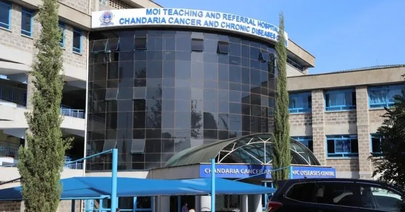
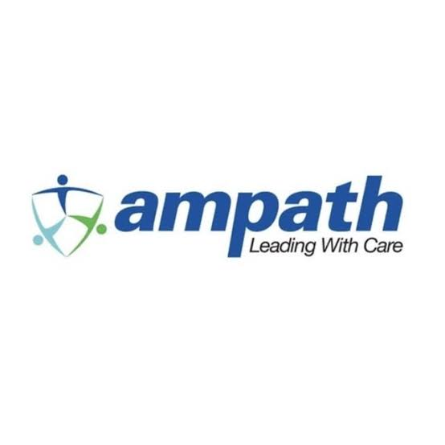

Photography and videography
Documented public health activities, events, people and community experiences through photography and video. This involved camera operation, composition, lighting and visual storytelling.


MY PROFESSIONAL EXPERIENCE
The Academic Model Providing Access to Healthcare (AMPATH) is an academic health partnership that brings together healthcare delivery, medical education, research and community development. Established in 1989 through a partnership involving Moi University, Moi Teaching and Referral Hospital, and a consortium of international universities led by Indiana University School of Medicine, AMPATH has grown into a broad health system serving communities through hospitals, health centres and community programmes.
ABOUT THE ORGANISATION
AMPATH was established to strengthen medical education and improve access to healthcare in western Kenya. Its work has developed beyond its early focus on HIV prevention, treatment and care into a wider approach to healthcare and population health.
Today, its areas of work include chronic disease management, cancer care, maternal and child health, mental health, infectious diseases, nutrition, surgery, palliative care, rehabilitation and community health.
Its approach connects prevention, diagnosis, treatment, rehabilitation, research, education and community empowerment. This means working with healthcare professionals, academic partners, government institutions, development partners and local communities to respond to changing health needs.
An important part of this work is communication. Sharing information about health programmes, documenting activities, educating communities and engaging stakeholders helps make the work visible and understandable.
Within this wider responsibility, the Public Health Department works to improve population health through disease prevention, health education, community engagement, outreach and behaviour change communication.
The Communication Unit supports these efforts through photography, videography, documentaries, digital content, social media, information and education materials, publications and advocacy.
FIELD ATTACHMENT
Organisation: Academic Model Providing Access to Healthcare (AMPATH)
Department: Public Health
Unit: Communication Unit
Period: 4 May 2026 – 4 August 2026
Supervisor: Ms. Allylah Msenya
My field attachment gave me practical exposure to communication within a public health environment. I worked across photography, videography, interviews, editorial tasks, graphic design and digital communication. The experience helped me understand how media and communication contribute to documenting programmes, sharing information and connecting people with public health work.
Documented public health activities, events, people and community experiences through photography and video. This involved camera operation, composition, lighting and visual storytelling.
Participated in field assignments and interviews with healthcare professionals, community members and beneficiaries. Recorded firsthand perspectives and documented activities through audio, photography and video.
Transcribed recorded interviews and used interview material to support human-centred storytelling. Contributed to documentation and written communication activities.
Worked on video editing by selecting footage, arranging sequences, improving audio and adding captions to prepare communication materials for reports and digital platforms.
Developed communication materials using Canva, including posters and brochures. Contributed to awareness and programme communication designs.
Supported proofreading, grammar correction, document review and content organisation. Also gained exposure to website development concepts, social media content planning, audience engagement and SEO.
Participated in assignments in Kapsoya, Elgeyo Marakwet and Kabenes, documenting activities and gathering photographs, videos and interview material.
Contributed to the development of an IMARA Breast Cancer awareness poster as part of public health communication.
Worked on a poster illustrating AMPATH's transition from community outreach to programme ownership.
Reviewed communication documents, including an IMARA BC programme document, and contributed to quarterly Population Health reports.
Participated in documentation activities for the KNOSA Forum at Eka Hotel and photography activities at the Chronic Disease Management (CDM) clinic.
Photography, videography, camera operation, video editing and visual storytelling.
Interview transcription, feature writing, proofreading, report writing and content review.
Graphic design, Canva, public health communication, digital content development and SEO exposure.
Teamwork, adaptability, time management, collaboration and ethical communication.
My time at AMPATH strengthened my understanding of how communication supports public health education, community engagement, awareness and programme documentation. It also gave me practical experience working with stories, people and information in a professional environment.
Explore selected work